Bonjour.Votre site est à jour.
En ligne
Ouvrez une carte pour la modifier.
Le reste du site, c’est nous. Demander au studio
Voir mon site en ligne ↗Modifiez un champ et le bouton s’allume.

Connectez-vous pour modifier votre site.

Ouvrez une carte pour la modifier.
Le reste du site, c’est nous. Demander au studio
Voir mon site en ligne ↗Modifiez un champ et le bouton s’allume.
Quitter sans publier ?
Vos modifications ne sont pas encore en ligne. Elles seront perdues.